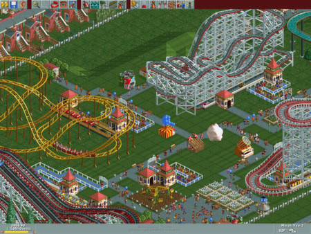
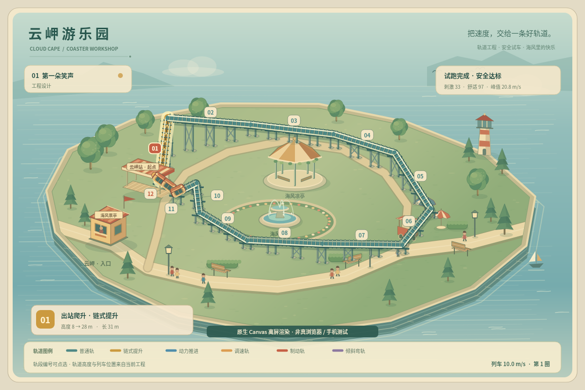
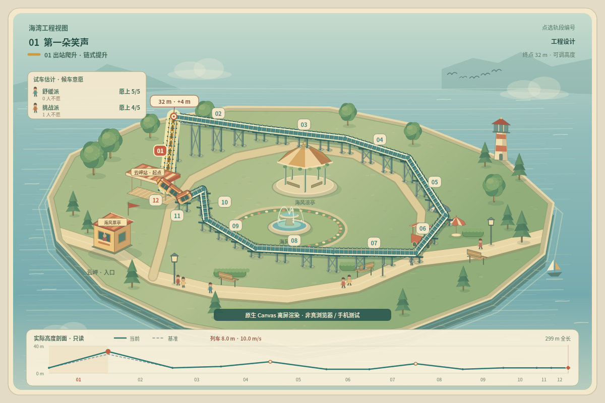

一座山峰，两种开园办法
云岬游乐园 v2 的有限一轮：让高程真正影响试车，再让不同游客的选择进入经营结果。不是完整《过山车大亨》复刻，也不把本轮称为美术质感升级。
以下自制画面都是原生 Canvas 离屏渲染，来自实际引擎通过正常命令达到的状态；不是网页实机截图，也没有完成真实手机验收。每张图片内也有标识。数值和动态来自本轮候选源码，不能替代公网游玩验证。
参考原作：创造、验证、观察人们的选择

Deluxe 收录初代与两个资料片。逐段搭建让玩家表达想法；试车和评级能指出问题；游客可以拒乘，满意与收入又给设计下一步的方向。创造与约束共同带来反复调整的乐趣，这是本轮从官方介绍、原版手册与创作者访谈作出的设计归纳。
这里借鉴的是这个循环。原作允许更多方向、曲线、坡度、连接和设施选择，还有全园道路、商店、员工、游客路径和长期经营。v2 只允许三处峰顶相对原高程上下 8 米，地面走向与弯道半径仍固定；只有两个简化偏好群体。
原作评级为兴奋、强度、恶心；这里的刺激/舒适与安全门槛是原创简化模型，不等于原作物理，更不能用于真实工程。
先看同一场景：v1 和 v2
都是第一园，1 号段安装提升、12 号段安装制动，其他普通轨；峰顶 28 米。两图均已经完整空车试跑，返回设计，尚未载客。v1 保持旧人数规则，v2 使用两组游客偏好；海岛、轨道和列车的代码绘制风格延续，不冒充全新美术。

v1 · 固定高程，配置模块
8 园旧入口和存档保留。轨道高度不可编辑，体验达标后使用原有上座规则。v2 · 相同配置，可继续改高程
移除画布内重复大标题和报告。结构、基准高程、真实列车与两组游客意愿在同一场景显示。两种都能完成的方案
两者使用相同模块。改造费每米 8，降低也要改支架，恢复原高程退费。加高改变相邻两段的长度、坡度和重力能量；更快、更刺激，也会牺牲预算与舒适。
A · 留住预算，慢一点开成
建造 220余款 160峰顶 28m舒适 97.2
刺激 33.2，峰速 20.8m/s。舒缓派 5/5、挑战派 3/5 愿上；每班 8 人，收入 128，口碑 74。正常运营 3 班达标（累计收入384、口碑222）。
B · 花 32 改高，少跑一班达标
建造 252余款 128峰顶 32m舒适 95.2
刺激 36.9，峰速 22.5m/s。舒缓派 5/5、挑战派 4/5 愿上；每班 9 人，收入 144，口碑 84。正常运营 2 班达标（累计收入288、口碑168）。继续加高，不会一直更好
36m · 两类游客的取舍出现
建造284，刺激40.2，舒适92.9，峰速24.2m/s。挑战派5/5愿上，舒缓派降为4/5。每班仍9人，口碑83，略低于32m方案。不是把按钮一直按到最高就最好。游客反馈，会实际入账
图为完成第一班后的正常运行状态；上一班收入144、口碑84已经结算。下一班继续载客，未完成的班次不会提前结算。改设计会清除安全报告，必须重测。动态：列车走的是改造后的轨道
原生 Canvas 离屏视频，正常速度固定步长模拟，无实机输入或浏览器帧率声明。12 秒载客片段经过第 1–6 号段，可观察爬升、下坠与转弯；轨道、支架和列车均来自同一几何数据。
亲自对比的最短路线
- 打开 v2 第一园，在1号段装提升、12号段装制动，点空车试跑。
- 记下游客意愿和每班收益，开放载客可正常3班达标。
- 重试第一园，装同样模块，选1号峰，升高4米。重新试车，然后开放，可2班达标。
- 或先在设计态再升高4米，看36米时两组游客的不同选择。运行中先返回设计，不能直接改动行驶中的轨道。